Exact disputed source
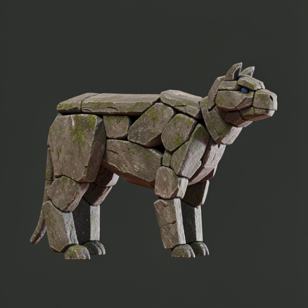
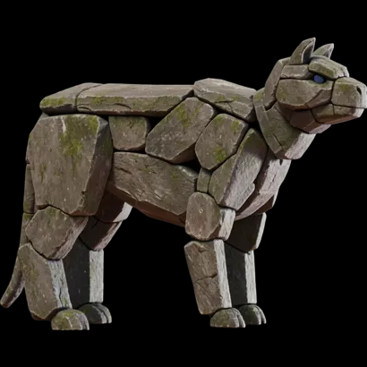
/preprocess_image return supplied to CUDADoes the weak rigid-stone reconstruction indict TRELLIS.2 itself, or only the current Mac routes?


/preprocess_image return supplied to CUDAHEALTHY GLB Microsoft Space revision ebf60b20fc5a4607f90a1c11c0aab0ceeda5429d; model plus export completed in 105.23s. This clears route health before interpreting the disputed source.
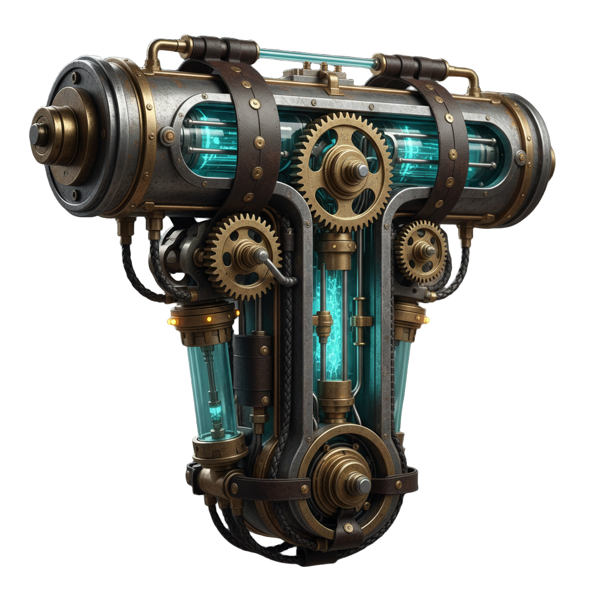
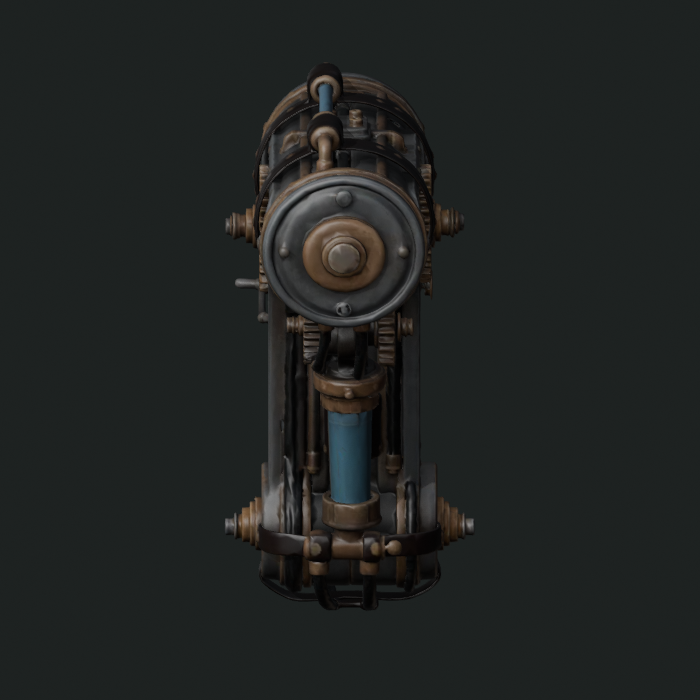
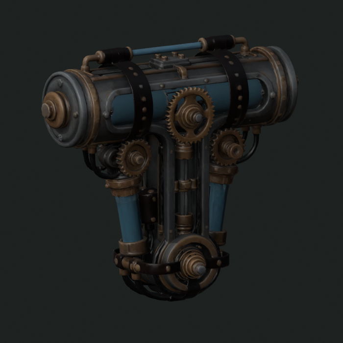
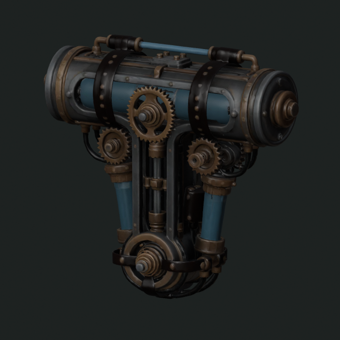
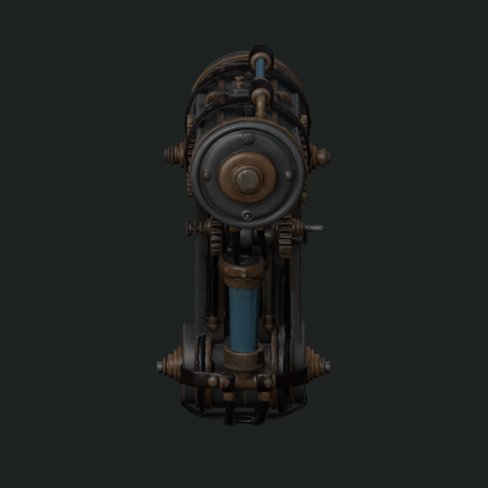
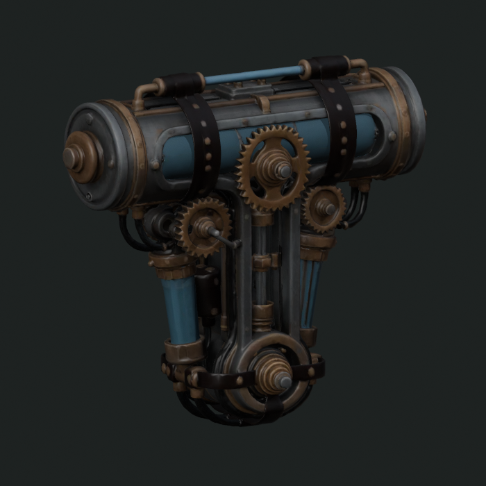
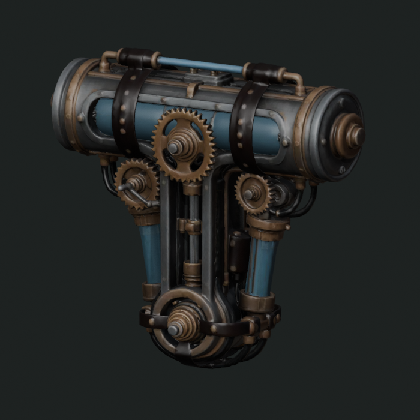
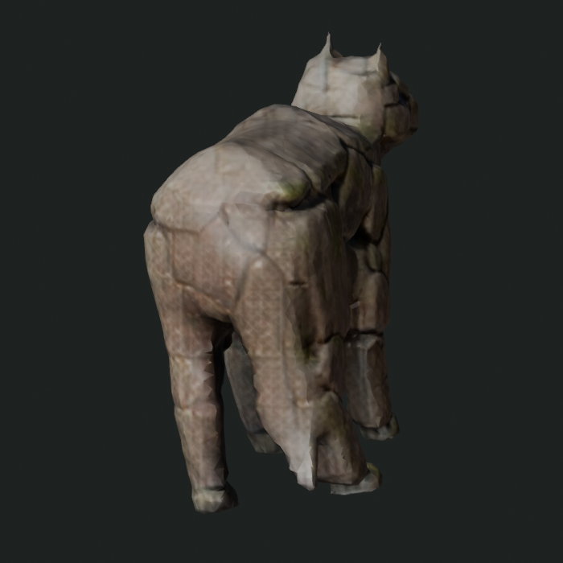
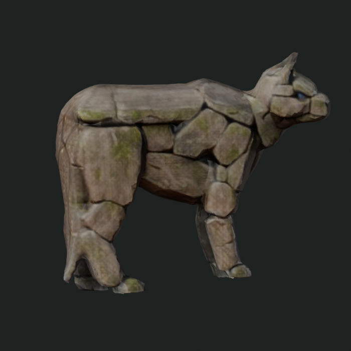
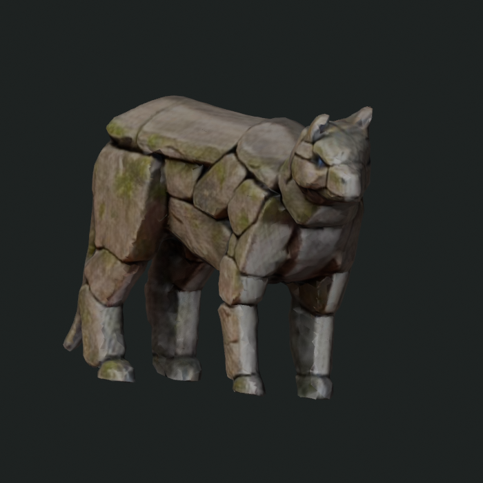
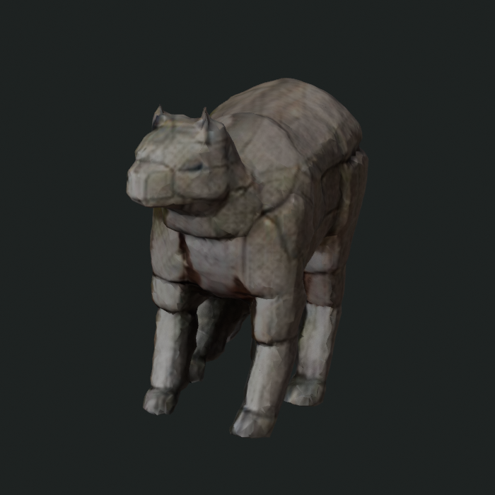
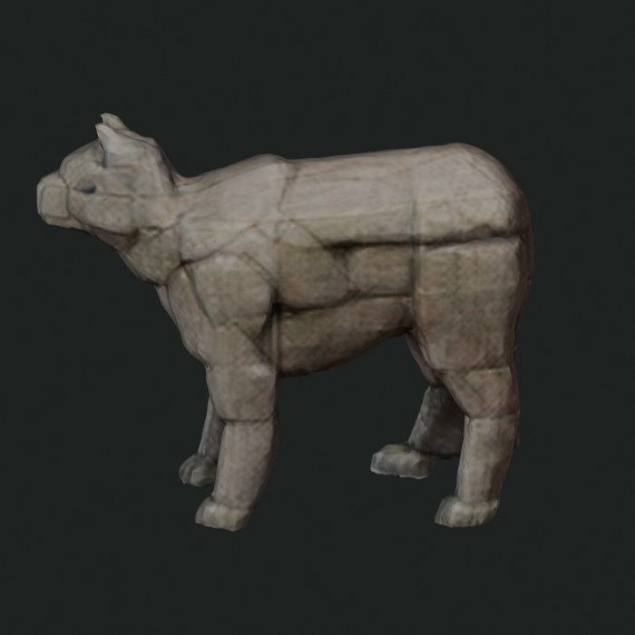
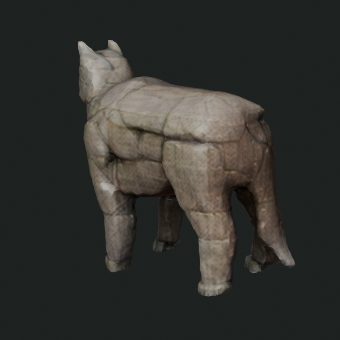
Closer stocky silhouette and mass placement; locally fused and softened plate structure.
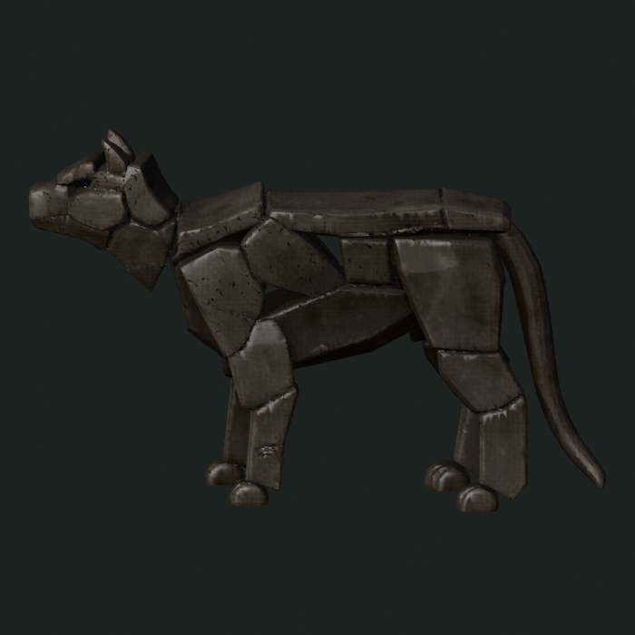
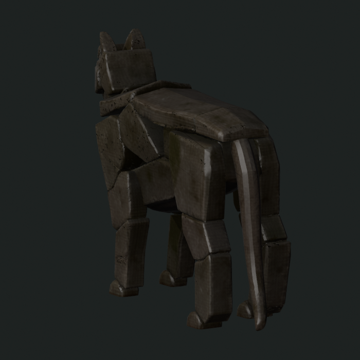
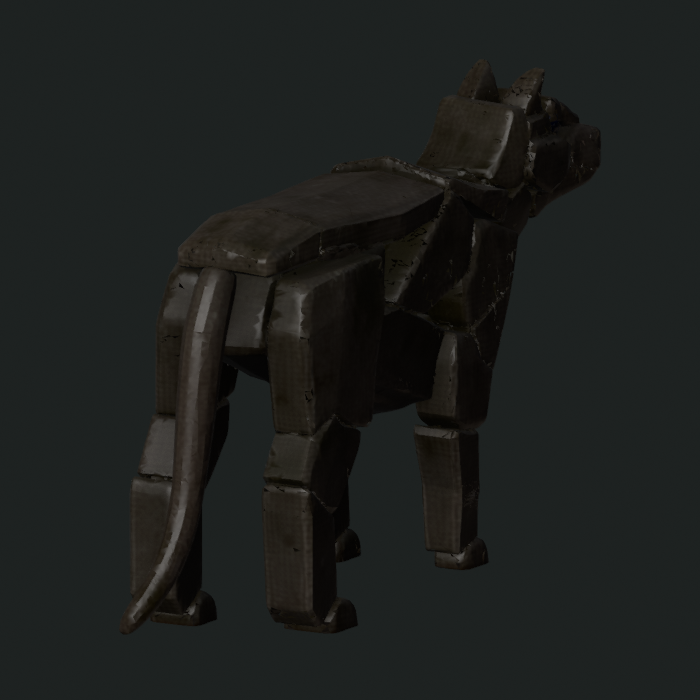
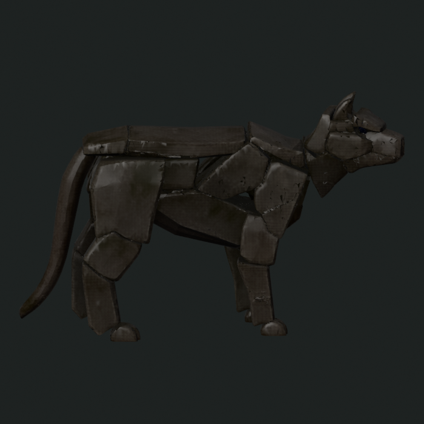
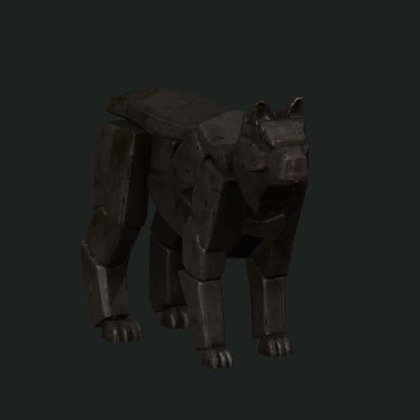
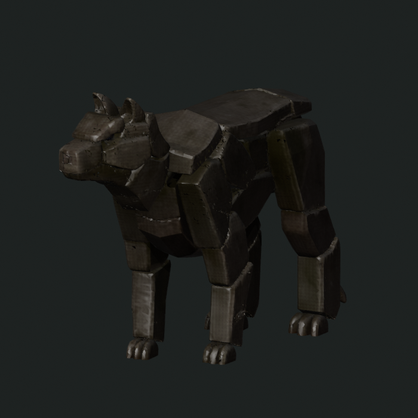
Sharper separable components, but a stronger learned-basin rewrite into a lean articulated object.
EXPORT UNRESOLVED
The anonymous public run returned its 48-view model preview. The subsequent 300k-face, 2K-texture GLB extraction was rejected by ZeroGPU quota. The initial runner did not retain the HTML preview; that preservation bug is fixed for replay.
The later authenticated retry was a separate same-source attempt and was rejected before inference; it produced no preview and carries no counter-result.
The exact paid replay is already pinned to the official Space image and app hash, model revision, exact preprocessed source, A10G 24 GB, seed 80301, official 12/12/12 sampler, 300k-face export, and 2K texture. Its 15-minute cost ceiling is $0.2505.
connector-authentication. The Hugging Face MCP connection requires reauthentication before job submission. No job id; charged=false.account-billing-preflight. HTTP 402: Pre-paid credit balance is insufficient; no job was provisioned. No job id; charged=false.Default: add positive Hugging Face prepaid credit and launch the exact A10G job immediately. Cost to learn is bounded; waiting for the public quota resets the same experiment for free after roughly 24 hours.
This evidence establishes that stock Microsoft CUDA can produce a healthy complex GLB and that the disputed stone input completed official model inference. It does not establish what official CUDA reconstructs for the stone source until a GLB is exported and visually inspected across views. It also rejects the campaign-wide claim that one reconstruction backend is uniformly superior.